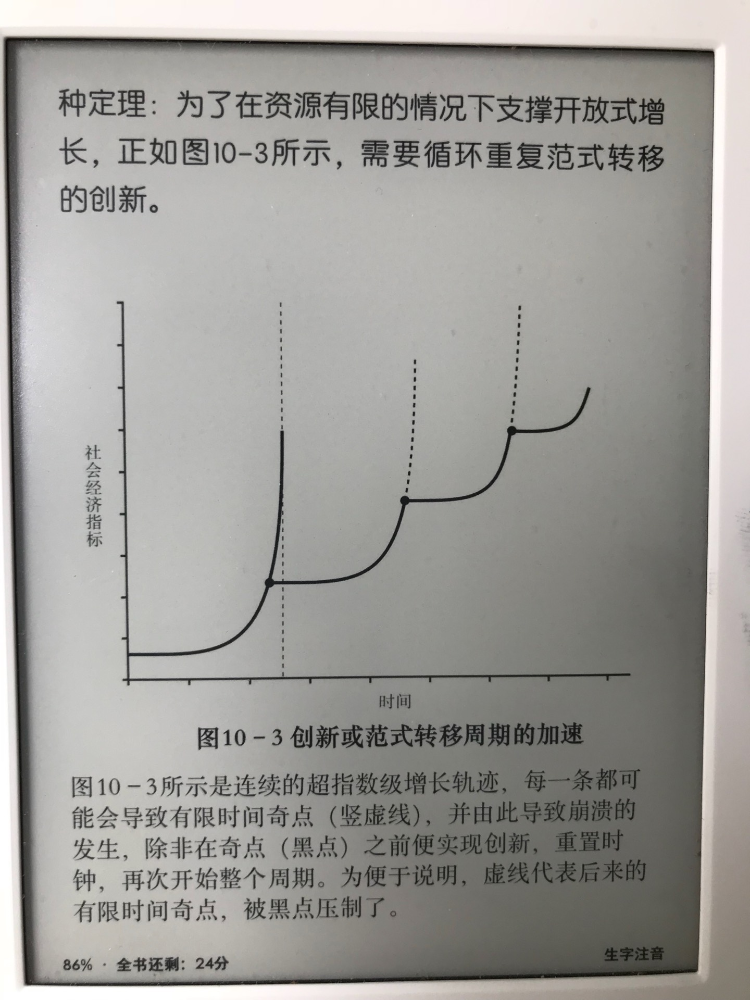

2018-09-01
指数级扩张的性质决定，未来将会以更加迅猛的速度来临，并可能会为我们呈现出无法预见的挑战，而等我们意识到它们的威胁时则为时已晚。
2018-09-02
一个典型的复杂系统是由无数个个体成分或因子组成的，它们聚集在一起会呈现出集体特性，这种集体特性通常不会体现在个体的特性中，也无法轻易地从个体的特性中预测。
总的来说，复杂系统的普遍特点是整体大于其组成部分的简单线性总和，而且整体通常也与其组成部分存在极大的不同。
与涌现、自组织概念密切相关的是诸多复杂系统的另一个重要特点，即具有根据不断变化的外部条件不断适应和进化的能力。
《生长与形态》
2018-09-03
《最后一位通才：托马斯杨》
健康和强壮等同于更大的变化和波动，心电图中的分形维数更大，这与这些系统的韧性有关。
对死亡的好奇以及对人生意义的质问和探寻贯穿人类文明的始终，但这些大多通过人类发明的各种宗教制度和经验得以证明并且形式化。
《大自然的分形几何学》
2018-09-04
在数万亿个观念、思想、猜测和新机器、新产品、新理论的提案中，只有极少数会存在重大意义。几乎所有都会半途而废，即使它们都为新的、有创造性的现象的出现和繁荣发展贡献了必要的背景噪声和世界观。所有这些都需要大量能量，无中不能生有。
2018-09-05
一座城市是一个自然形成的复杂适应系统，是种“流”结合的产物，一种是维持并促进自身基础设施和居民发展的能源和资源流，另一种则是连接所有公众的社会网络中的信息流。
在大城市，人均拥有的不仅仅是更高的工资、更多的专利、更多的餐厅、更多的机会、更多的社会活动和更大的繁荣，还有更多的犯罪和疾病，以及生活在更大的压力、烦恼、恐惧之下，信任和文明程度更低。
《人类行为与最小努力原则》
2018-09-06
城市由两种元素组成:它们的物理基础设施——表现为建筑物、道路等，以及它们的社会经济动力学表现为思想、创新、财富创造和社会资本等。
2018-09-07
学术界提出的用于理解公司的传统机制主要分为三个大类:交易成本、组织架构和市场竞争。尽管它们是彼此联系的，但经常被区别对待。
2018-09-08
《创造性破坏》
标准公司组织架构图通常是自上而下，有着树形结构的，从表面上看，它代表了经典的自相似分形结构。这能够解释为何公司会展现出幂律变化的特点。

生命的节奏随着人口规模的增长而系统性加速:疾病传播更快、企业产生和消失的速度更快，甚至大城市中的人们步行速度也更快，所有这一切都遵守15％法则。
一个重大的创新会有效地重设时钟，改变系统运行和增长出现的条件。因此，为了避免崩溃的结果，必须发起新的创新，重设时钟，让增长继续，避开即将到来的奇点。
只要人类依然具有创新能力，我们便可以通过持续不断的、更加天才的创新领先于任何迫在眉睫的威胁，这已经被视作理所当然，而且成为不容置疑的信条。
我们不仅仅是生活在不断加速的跑步机上，而且在某个阶段，我们必须跳到另一台以更快的速度加速的跑步机上，并且早晚还要再次从这台跳到另一台加速度更快的跑步机上。整个过程必须在未来不断地加速重复。
数据革命将成为一项推动科学在21世纪发展进步的重大范式转移，他把它称作“第四范式”。他认为，其他三个范式分别为:实验科学（伽利略之前的时代）、理论科学（牛顿之后的时代）、计算科学。